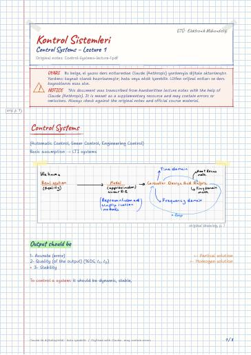
Control Systems – Lecture 1
Control Systems · Output should be · Stability types · Classification for control systems
Kontrol Sistemleri — ders notları, projeler · Gebze Teknik Üniversitesi (GTÜ) Elektronik Mühendisliği
Mathematical modelling (transfer functions, state space), transient and steady-state analysis, stability, root locus, PID and compensator design.
Sistemlerin matematiksel modellenmesi (transfer fonksiyonu, durum uzayı), geçici ve kalıcı hal analizi, kararlılık, kök yer eğrisi, PID ve kompanzatör tasarımı.
On this page: Lecture notes Digital notes (LaTeX) Exam preparation Projects GitHub repositories
Most files are in Turkish; file and folder names are shown as they appear in the repository.
Searchable digital versions of the handwritten notes, typeset in LaTeX (the notes are written in Turkish). Template and build: latex-sablon.

Control Systems · Output should be · Stability types · Classification for control systems
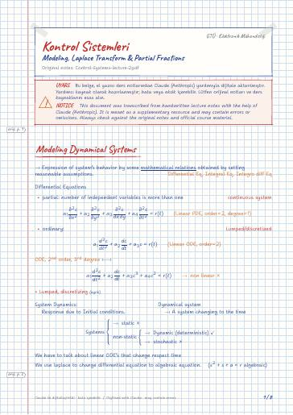
Modeling Dynamical Systems · Laplace Transform · Linearity theorem · Scaling · Differention · Integration
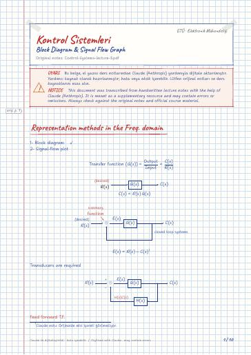
Representation methods in the Freq. domain · Transverse signal approach · Noises/distrubances · Superposition principle · Signal Flow representation /graph · Mason's rule
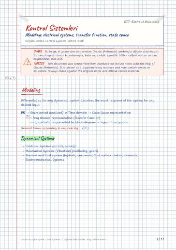
Modeling · Dynamical Systems · Passive elements · RLC circuit in series · RLC circuit in parallel · Methods of Complex impedences
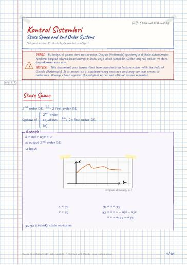
State Space · State space representation · State space representations · Phase variable form · Case 1: No derivative of the input · Case 2: Derivative of input is present
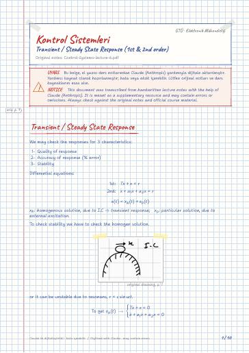
Transient / Steady State Response · First order system · if R(s)=0 → transient solution · First order systems · case II) step excitation · Impulse response =ddt (step response)
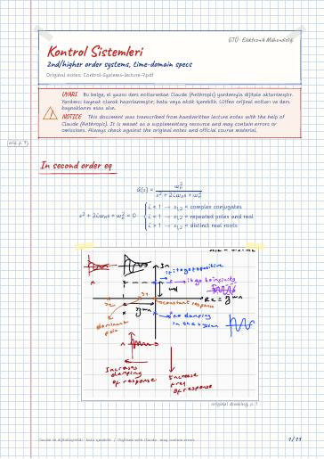
In second order eq · Higher order Systems · Quality of response · SISO Tool Matlab · Find for the given C.L.T.F
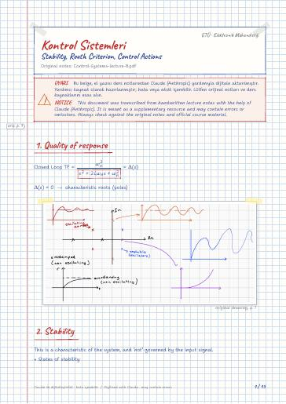
1. Quality of response · 2. Stability · Routh methode · Exception #1 · Exception #2 · Relative stability

Accuracy of Systems · Validity of final value theorem · Steady state error for disturbance · Sensitivity
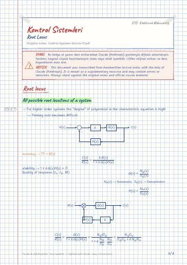
Root locus · All possible root locations of a system · Steps of Drawing · 3- Asymptote determine · Determine the breaking points
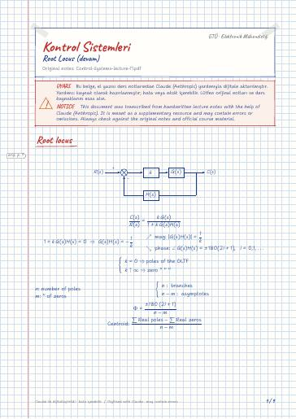
Root locus · 5 - Complex conjugate poles · Step 6 Intersection with the jω axis
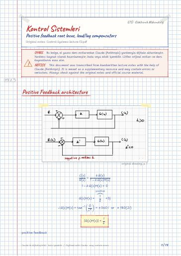
Positive Feedback architecture · Compensator design · Adding poles · Lead compensator: zero is closer to jω axis · Lead lag compensator
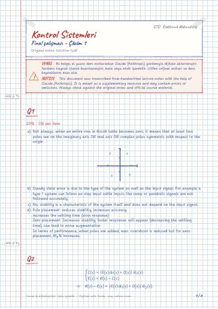
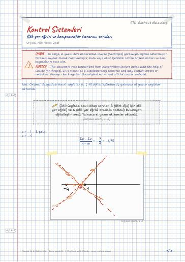
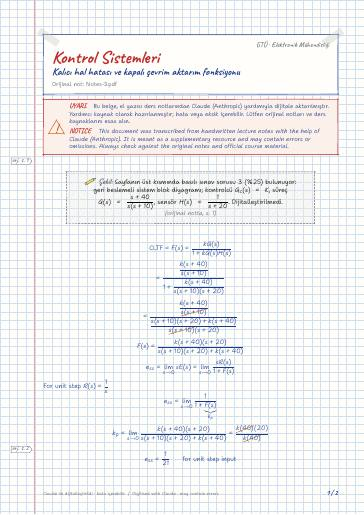
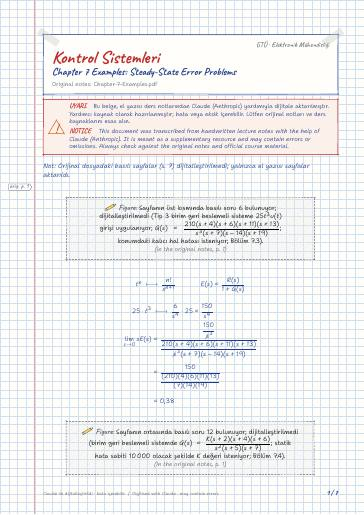
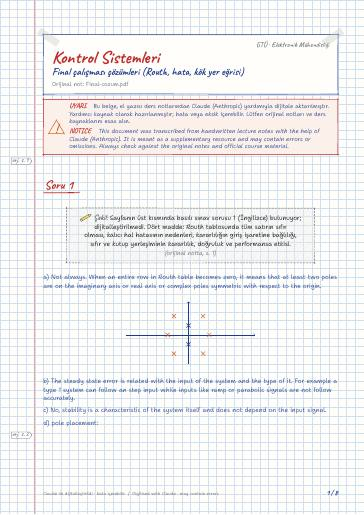
Soru 1 · Soru 2 · Soru 3 · Soru 4
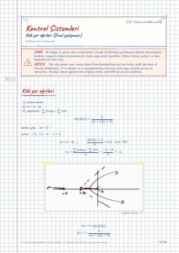
Kök yer eğrileri · Tekrar · Skill Assessment Ex 8,4 · Positive Feedback Architecture
Control Systems term project: DC motor speed control – modelling (transfer function, state space), transient/steady-state analysis, PID, root locus and lead/lag compensator design (report PDF).
Electromagnetic Wave Theory · Communications Laboratory · Digital Communications · Fundamentals of Digital Signal Processing · Digital Signal Processing Laboratory
Open the folder on GitHub← Semester 6
Course materials belong to their instructors and GTU and are shared for educational purposes only.